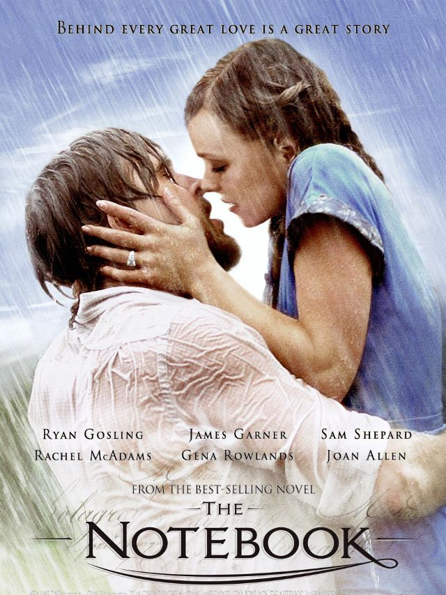
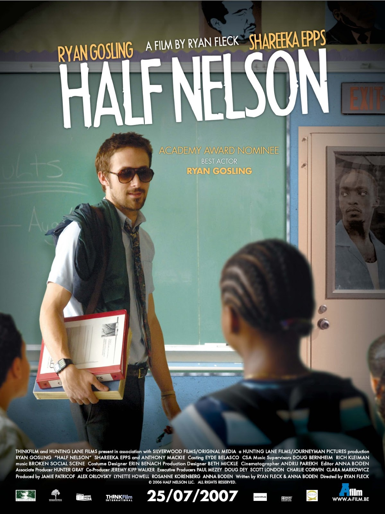
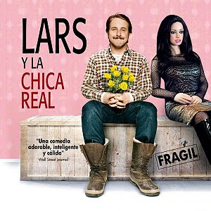
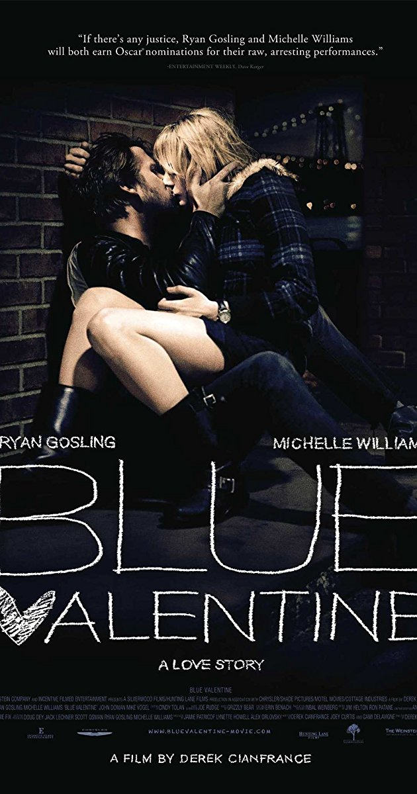
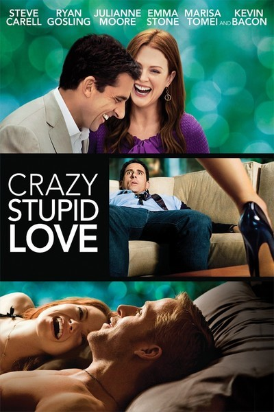

| Ilustración | Año | Pelicula | Papel | Notas y Premios |
|---|---|---|---|---|
| 2001 | The Believer | Danny Balint |
Premio Russian Guild of Film Critics por Mejor Actor Extranjero Nominado — Chicago Film Critics Association por Mejor Actuación Promesa (también por Murder by Numbers) Nominado — Independent Spirit Award por Mejor Actor |
|
|  | 2004 | The Notebook | Noah Calhoun |
MTV Movie Award por Mejor Beso (compartido con Rachel McAdams) Teen Choice Award por Elección de Actor de Película – Drama Teen Choice Award por Elección a Mejor Actuación – Male Teen Choice Award por Elección de Película con Química (compartido con Rachel McAdams) Teen Choice Award (compartido con Rachel McAdams) Teen Choice Award por Escena de Amor en Película (compartido con Rachel McAdams) Nominado — Teen Choice Award por Escena de Baile en Película (compartido con Rachel McAdams) |
|  | 2006 | Half Nelson | Dan Dunne |
Premio Independent Spirit al mejor actor Stockholm International Film Festival Award por Mejor Actor Seattle International Film Festival Award por Mejor Actor Las Palmas Film Festival Award por Mejor Actor National Board of Review por Actuación Masculina Village Voice Film Poll – Mejor Actor Nominado — Óscar al mejor actor Nominado — Broadcast Film Critics Association Award por Mejor Actor Nominado — Chicago Film Critics Association Award por Mejor Actor Nominado— Chlotrudis Award por Mejor Actor Nominado — Online Film Critics Society Award por Mejor Actor Nominado — Satellite Award por Mejor Actor – Película Nominado — Screen Actors Guild Award por Excelente Actuación por un Actor Masculino en un Papel Principal Nominado — St. Louis Gateway Film Critics Association Award por Mejor Actor Nominado — Toronto Film Critics Association Award por Mejor Actor |
|  | 2007 | Lars and the Real Girl | Lars Lindstrom |
Satellite Award por Mejor Actor Nominado — Broadcast Film Critics Association Award por Mejor Actor Nominado — Chicago Film Critics Association Award por Mejor Actor Nominado— Chlotrudis Award por Mejor Actor Nominado — Globo de Oro al mejor actor - Comedia o musical Nominado — PRISM Award por Mejor Actuación en Película Nominado — Premio del Sindicato de Actores al mejor actor protagonista Nominado — St. Louis Gateway Film Critics Association Award por Mejor Actor |
|  | 2010 | Blue Valentine | Dean Pereira |
Chlotrudis Award por Mejor Actor Nominado — Broadcast Film Critics Association Award por Mejor Actor Nominado — Chicago Film Critics Association Award por Mejor Actor Nominado — Detroit Film Critics Society Award por Mejor Actor Nominado — Globo de Oro por Mejor Actor Nominado — London Film Critics Circle Award por Actor del Año Nominado — Online Film Critics Society Award por Mejor Actor Nominado — Satellite al mejor actor de reparto - drama Nominado — Utah Film Critics Association Awards por Mejor Actor |
|  | 2011 | Crazy, Stupid, Love | Jacob Palmer | Nominado — Globo de Oro al mejor actor - Comedia o musical |
 |
2011 | Drive | El conductor |
Satellite al mejor actor de reparto - drama Premio Dublin Film Critics' Circle por Mejor Actor122 Nominado — Premio Broadcast Film Critics Association por Mejor Actor Nominado — Premio London Film Critics Circle por Actor del Año Nominado — Premio Independent Spirit al mejor actor Nominado — Premio St. Louis Gateway Film Critics Association por Mejor Actor Nominado — Women Film Critics Circle por Mejor Actor |
 |
2016 | La La Land | Sebastian Wilder |
Globo de Oro al mejor actor - Comedia o musical Nominado — Oscar al mejor Actor Nominado — Premios BAFTA al Mejor Actor Nominado — Crítica cinematográfica al mejor Actor Nominado — Sindicato de actores al mejor Actor |